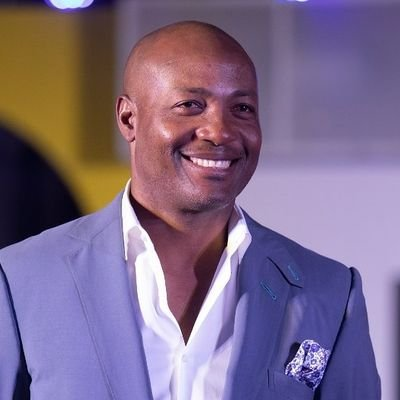

| Cricket |  |
|---|
| Cricket | |
|---|
| 1. |
Sachin Tendulkar |
Sachin Ramesh Tendulkar is an Indian former international cricketer and a former captain of the Indian national team. He is widely regarded as one of the greatest batsmen in the history of cricket. He is the highest run scorer of all time in International cricket. |
| 2. |
 Don Bradman |
Sir Donald George Bradman, AC, often referred to as "The Don", was an Australian international cricketer, widely acknowledged as the greatest batsman of all time. Bradman's career Test batting average of 99.94 has been cited as the greatest achievement by any sportsman in any major sport. |
| 3. |
 Brian Lara |
Brian Charles Lara, TC, OCC, AM is a Trinidadian former international cricketer, widely acknowledged as one of the greatest batsmen of all time. He has the largest individual score in Test cricket of 400* vs England in 2004. |
| 1. |

Mithali Raj |
Mithali Dorai Raj is an Indian cricketer and the captain of the Indian women's national cricket team in Tests and ODIs. A right-handed opening batswoman, she is often regarded as one of the greatest batswoman to have ever played the game. |
| 2. |
 Ellyse Perry |
Ellyse Alexandra Perry is an Australian sportswoman who made her debut for both the Australian cricket and the Australia women's national soccer team at the age of 16. She played her first cricket international in July 2007 before earning her first football cap for Australia a month later. |
| 3. |
 Meg Lanning |
Meghann Moira Lanning is an Australian international cricketer who currently captains the Australian women's national team and the Victorian Spirit, as well as the Perth Scorchers. She holds the record for the most career centuries in women's One Day International, with twelve. |